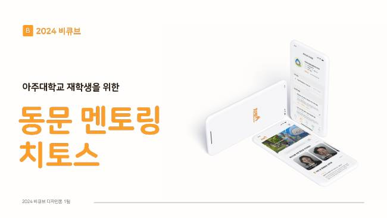

01
동문 멘토 매칭
온보딩 정보를 바탕으로 나에게 맞는 멘토를 찾습니다.
기업이 실무 경험을 요구하면서 멘토링 수요는 늘었지만, 유료 컨설팅은 비싸고 신뢰하기 어렵고 기존 플랫폼은 나에게 맞는 멘토를 찾기 어렵다는 문제를 다뤘습니다. 재학생 설문을 바탕으로 온보딩 데이터 기반 졸업생 멘토 추천·매칭, 가이드라인에 따른 포트폴리오 관리, AI 챗봇을 활용한 자소서 첨삭과 모의면접 기능을 기획했습니다.

기업이 실무 경험을 요구하면서 멘토링 수요는 늘었지만, 유료 컨설팅은 비싸고 신뢰하기 어렵고 기존 플랫폼은 나에게 맞는 멘토를 찾기 어렵다는 문제를 다뤘습니다. 재학생 설문을 바탕으로 온보딩 데이터 기반 졸업생 멘토 추천·매칭, 가이드라인에 따른 포트폴리오 관리, AI 챗봇을 활용한 자소서 첨삭과 모의면접 기능을 기획했습니다.
온보딩 정보를 바탕으로 나에게 맞는 멘토를 찾습니다.
가이드라인을 따라 경험을 정리합니다.
자기소개서 첨삭과 모의면접을 돕는 AI 챗봇을 기획했습니다.
동문 멘토와의 연결에서 포트폴리오 준비까지, 성장의 여정을 이어줍니다.
나의 관심과 선배의 경험이 만나는 과정
온보딩에서 관심 분야와 필요를 정리합니다.
입력한 정보를 바탕으로 맞는 선배를 찾도록 기획했습니다.
준비할 내용을 단계별로 정리합니다.
자소서 첨삭과 모의면접을 돕는 AI 기능을 제안합니다.
위 내용은 발표 자료에 담긴 서비스 기획을 설명합니다.
발표 자료에 담긴 서비스의 모습과 아이디어를 살펴보세요.